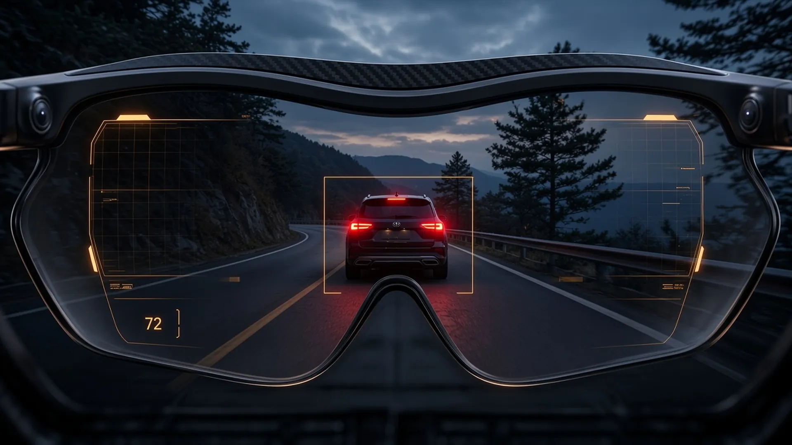
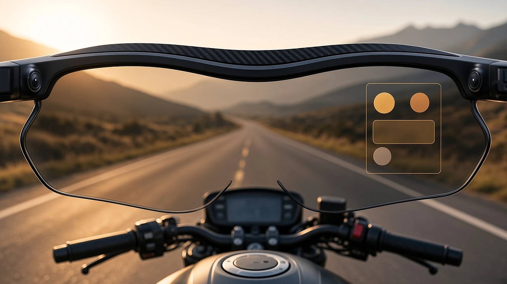
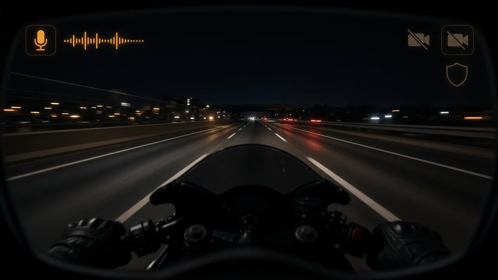
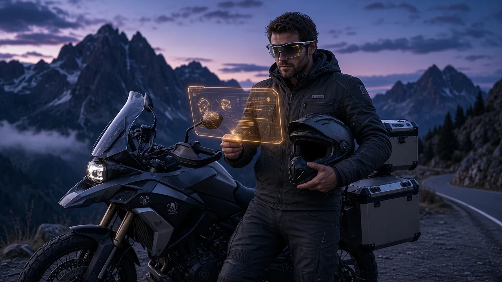
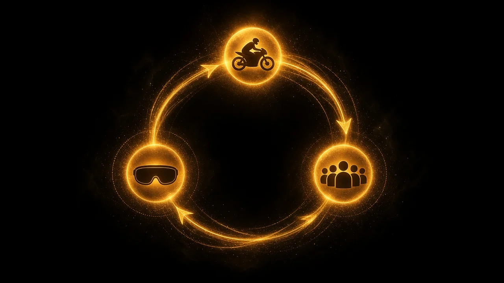

3 位摩友补充了骑法与注意事项
摄像头第一视角拍照录像，识别前车与沿途地标
01 / 05
头盔内佩戴镜片贴近视线，导航与预警抬眼可见。
骑士 KNIGHT · 摩托车 AI 眼镜摩托车 AI 眼镜
每一程，都有骑士同行。骑行 AI 眼镜AI riding glasses
一副戴进头盔的 AI 眼镜 + 一个 App + 一个摩友社区。
替你看路、连起车队、记下每一程。戴着眼镜听路况、跟队友通话，骑完用 App 回看行程。Hear road alerts and talk to your crew, then revisit the ride in the app.
01 · 痛点
骑车的人，缺一双「第二双眼睛」骑行路上的六个难处Six challenges on the road
01
前车急刹、胎压异常，都来不及反应急刹和慢漏气Sudden braking and slow leaks
低头一瞬尾灯已亮，慢漏气骑着也感觉不到。
刹车灯识别 + 测距 + 车速预警，胎压胎温实时监测 →识别刹车灯，监测车距、胎压与胎温Brake-light detection, distance and tire monitoring 02骑久了犯困，总想再撑一会儿长途骑行易疲劳Fatigue on long rides
身体发出的信号，骑行中最容易忽略。
参考心率、睡眠和连续骑行时长，提醒你休息 →结合骑行时长和健康记录，提醒休息Rest cues based on ride time and health records 03双手离不开车把，电话微信没法回腾不出手接电话Calls with both hands on the bars
停车掏手机不现实，重要消息一路漏掉。
眼镜代收发电话、微信，团队语音、播报提醒与音乐 →语音接听、回微信，也能听到车队消息Take calls and hear WeChat and crew messages by voice 04掉队失联，一回头人没了弯道过后，队友掉队A teammate falls behind
山路弯多、信号差，喊也喊不应。
全队实时位置，语音播报掉队与危险 →共享位置，提醒领队谁在后方Share positions and alert the leader when someone drops back 05记录麻烦，旅程只剩模糊记忆风景一闪而过A view gone in a moment
停车掏手机拍，回家素材没人剪。
自动记录，到家就有 vlog 和手帐 →语音拍摄，到站后整理成短片和手帐Capture by voice, then revisit the ride as a film and journal 06遇到问题，荒郊无人可问路上遇到故障Trouble far from help
车打不着火，搜不到也问不到。
向眼镜提问，听骑友的处理办法 →向眼镜提问，听摩友分享的处理经验Ask the glasses for advice from riders who have been there02 · 解决方案
一副眼镜 + 一个 App + 一个社区眼镜、App 与骑友社区Glasses, app and community
全程语音，双手不离把。信息同步到眼镜，以语音播报为主。
03 · 愿景
路再远，骑士都在。
让每一位摩友，都能安心骑完想去的每一程。
「双手留给车把，眼睛留给风景，其余的交给骑士。」
个人守护
危险，先你一步看见：前车、轮胎、身体，一副眼镜替你盯着。
前车急刹时，镜片标出车距，语音提醒你减速。

前车急刹测距
数据来源 · 前车刹车灯识别 · 视觉测距 · 本车车速
车距18 m当前车速56 km/h
前车距离缩短，请拉开车距。
AI 随行
双手不离把，说话就能问、能拍、能录，旅途自己会留下。
临近弯道，音乐自动变轻，等眼镜报完方向再恢复音量。
路在眼前，歌在耳边
当前速度52 km/h剩余8.6 km位置共享中
旅途歌单 · 已暂停导航播报时自动压低，播报结束恢复
音乐 · 旅途暂停
导航播报待机
导航提示结束后，音乐恢复原音量。
组队骑行
App 拉群组队，位置、排名、赛况同步到眼镜。
手机扫出附近摩友，队友陆续入队，眼镜报出到齐人数。
编队 HUD封闭路段
已保存第一视角超车片段
9:41骑士 App车队
组队邀请川西 318 小队邀请码 KN318 · 周六 07:30 康定出发一键拉群
- 老老王 · 领队已入队
- 我我已入队
- 老老周邀请中
- 阿阿哲邀请中
- 小小林邀请中
位置共享 · 待全员入队

眼镜视角
「你好骑士，邀请老王组队」
组队邀请已发送给老王
附近扫一扫，或面对面建群
App 扫描附近摩友一键邀请，或面对面输入同一个 4 位数自动入群，眼镜同步确认。
- 附近 3 km 摩友，自动邀请
- 面对面输 4 位数，全员入群
- 入队后位置与排名实时共享
手机 App 一键拉群，或对眼镜说一句远程发起邀请。
- 无需额外设备：手机 + 眼镜即可
- 队友戴上眼镜自动入队
- 入队后位置与排名实时共享
2 / 5 人已入队
全队位置，一条线看清
每台车的位置实时上图，排名和间距随骑随变。
- 编号与颜色对应每位车手
- 排名实时重排
- 掉队过远自动提醒
- P1老王 · 01 号领队
- P2我 · 02 号+0.8 km
- P3老周 · 03 号+1.6 km
- P4阿哲 · 04 号+2.3 km
眼镜语音播报：“当前排名第二，距领队 0.8 公里。”
路段竞速，像一场比赛
选定一段路，起终点自动计时，分段成绩和名次同步到每副眼镜。
- 起终点自动计时
- 分段成绩语音播报
- 冲线即出领奖台
川西车队 · 本队
滇藏车队
今日路线任务 · 全队打卡两座海拔 4,000 米以上的垭口。
1 / 2 座 · 云端骑士徽章待解锁
同路摩友，开口就能聊
同路雷达发现前方同向车队，说话直达对方眼镜，对方回话实时转成字幕。
- 同向车队自动发现
- 语音直达对方眼镜
- 回话实时转字幕
同路雷达识别到前方 200 米的同向车队，语音唤醒即可互致问候。
车队频道待接通
收车就有全队高光榜
骑行结束，AI 按全队的路线、数据和影像自动评出今日荣誉。
- 里程、爬升自动统计
- 最远 · 最快 · 最稳 · 摄影担当
- 一键分享到车队群
骑行结束后，AI 按全队的路线和影像生成高光榜。
可在这张分享卡上查看今日车队荣誉。
组队骑行
谁在哪、前面有什么，全队同步，平安一起到。
三号车落后时，领队收到提醒，设好集合点后全队同步导航。

川西 · 折多山G318 · 车队位置
03 号车掉队4 台眼镜
车队 HUD队内位置同步
03 号车落后 1.5 km
领队可在镇口设置集合点，全队同步导航。
全队镜片标出掉队车辆的最后方位。
组队骑行
多机位自动成片、云端路书与地图相册。
四位骑手各自拍下的画面，按时间和位置对齐，剪成一支车队短片。
川西车队 · 片段一山谷出发
0:00 / 1:00
全队高光时间线
按拍摄时间与定位对齐四路素材，叠加速度、海拔和配乐。
点选片段可直接跳看骑士社区
摩友经验，就在耳边；越用越懂你。
摩托车打不着火时，骑士找到相似案例，念出车友检查开关和电瓶的顺序。

骑友经验 · 相关案例
- 确认熄火开关、边撑开关已复位，空挡灯亮起
- 按启动只听到“咔哒”声，多半是电瓶亏电
- 电瓶亏电可请队友搭电，或推行至最近维修点
一句话提问 → 匹配社区相似案例 → 结合你的车和路况讲给你听
回答仅供参考，以车辆手册和专业维修意见为准。
领队总结的 3 条雨天压弯要点
整理自公开骑行经验，已标注车型
- 汇集App 里摩友发帖，加上网络公开的骑行问题与解决案例
- 归档整理成骑行知识库，按车型、路况、地区归类
- 查找骑行中一句「你好骑士」，从知识库调出答案讲给你听

第 1 环